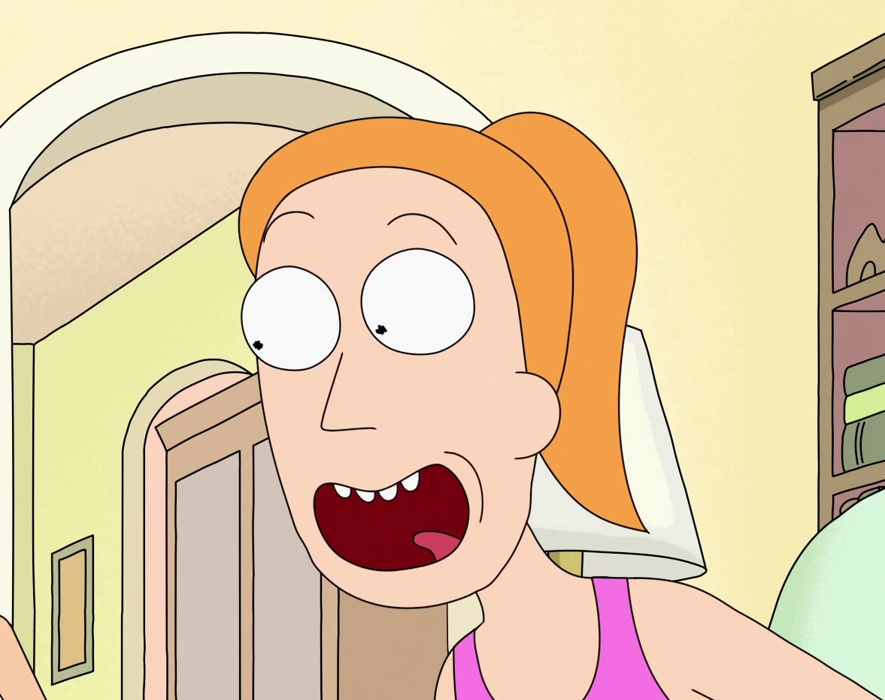

Personagens
Rick Sanchez
Um cientista alcoólatra de 60 anos extremamente inteligente que é capaz de construir máquinas e acessórios tecnológicos que o permitem viajar por diversas dimensões e realidades paralelas.

Morty Smith
Neto facilmente influenciável e com dificuldades escolares de 14 anos de Rick, parece ser a quem este demostra maior afeto e expectativa dentro da família.

Summer Smith
Tem 17 anos e é a irmã mais velha de Morty, uma adolescente convencional muitas vezes superficial, que é obcecada por melhorar seu status com seus colegas.